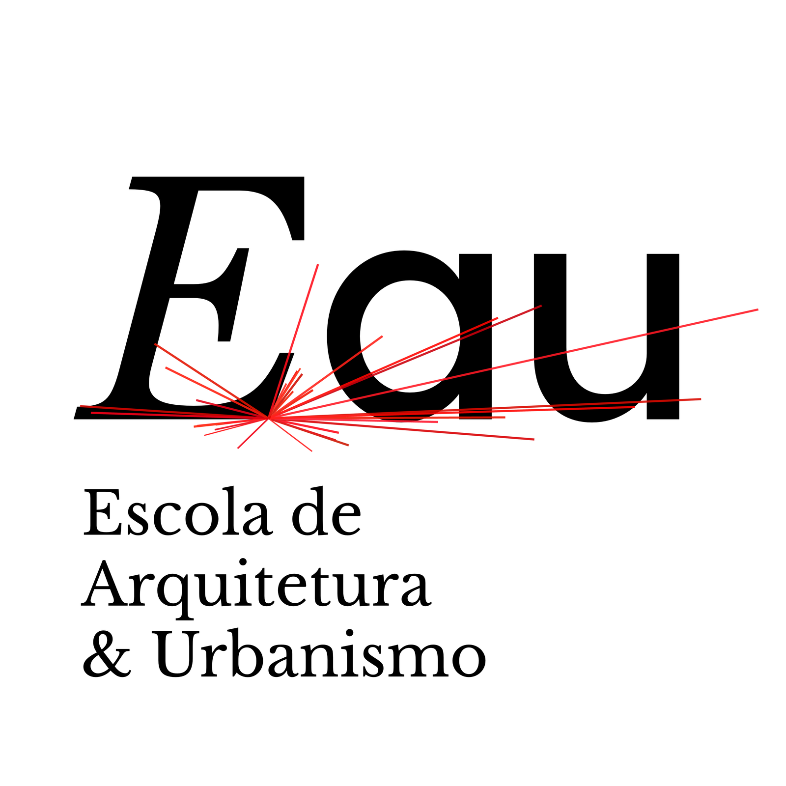

Um novo logo para a EAU, desenhado por quem a atravessa
Há anos, os estudantes desenham a EAU com o próprio corpo. Cada trajeto de casa até a escola, repetido dia após dia, na ida e na volta, deixa uma linha no território. Somadas, essas linhas formam um desenho: um centro de projeção que parte da Rua Passo da Pátria e se abre para além da Região Metropolitana do Rio de Janeiro.
Ninguém deliberadamente pousou o lápis no papel e fez esse desenho, mas ele existe. Ele mostra quem é a escola de verdade: de onde vêm as pessoas que a fazem acontecer.
Propomos um concurso aberto para um novo logo da EAU, criado a partir desse desenho coletivo: o ponto de origem, as linhas, as distâncias e as direções que os estudantes traçaram durante anos com seus corpos.
Uma escola de arquitetura e urbanismo também se representa pelo território que ela mobiliza. Um logo nascido dos trajetos reais dá a ver o que o prédio sozinho não mostra, e transforma uma condição que costuma ser tratada como invisível.
Esta é uma proposta para ser construída em conjunto. As regras, o prazo, quem pode participar e como será a escolha devem ser definidos de forma democrática, com a participação dos estudantes. Se você quer ajudar a organizar, comece pelo mapa: cada trajeto registrado fortalece o desenho.